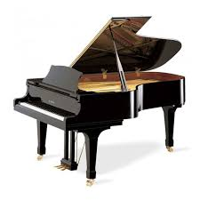

I enjoy playing my instruments in my free time as well as listening to music, either being played by someone, or hearing it on my Alexa or something. It's very fun to hear all the different sounds of an instrument, how low or high it can go, and what kind of music it can play. These are the instruments that I play:
The Drums :
Fun Facts About the Drum : The drums earliest surviving examples of the drum is about 200 years old, but the drum set we call today is only 100 years old. The drums were originally made in ancient Turkey or China, but they were also used in Israel and Egypt a lot. By the 20th century, drums became very popular.
Do You Know? Q1 : What was the drums original use?
I love playing the drums and any percussion instrument, because I like how there are different choice on what you can play. As well as having choices and deciding what I want to do, and there are also different technics for all of them.
The Piano :
Fun Facts About the Piano : The piano was invented in 1709 by an Italian harpsichord which means “keyboard” maker. The piano was originally called gravicembalo col piano e forte, which translates to “soft and loud keyboard instrument.”
Do You Know? Q2 : What is the name of the Italian man that invented the piano?
I enjoy playing the piano, because the piano has a very relaxing sound. It can either be in major or minor, and depending on whichever it is, it creates a different mood to the song. Also, there are different kinds of piano: electric piano, a jazz-y sound, uplight piano, a softer sound, and the grand piano, a loud, stronger, and more clean sound, even if all the pianos are playing the same song.
A1 : Originally, they used to motivate soldiers for thousands of years.
A2 : Bartolomeo di Francesco Cristofori